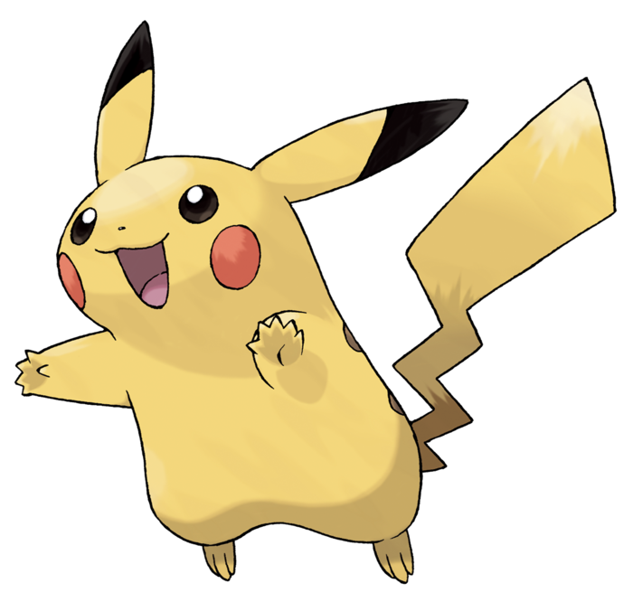
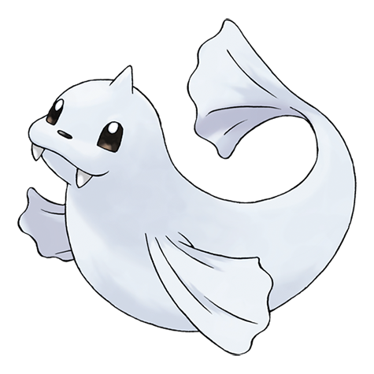
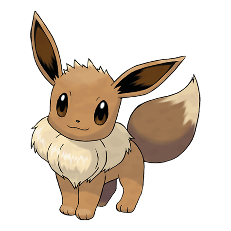

Pikachu
Pikachu (ピカチュウ Pikachuu) is an Electric-type Pokémon which was introduced in Generation I. Pikachu is renowned for being the most well-known and recognizable Pokémon. Over the years, Pikachu has become so popular that it serves as the Pokémon franchise mascot. It is the Version Mascot and Starter Pokémon for the game Pokémon Yellow. Source
| Properties | Value |
| HP | 35 |
| Attack | 55 |
| Defense | 40 |
| Speed | 90 |
Dewgong (ジュゴン Jugon) is a Water/Ice-type Pokémon introduced in Generation I. Source
| Properties | Value |
| HP | 90 |
| Attack | 70 |
| Defense | 80 |
| Speed | 70 |
Eevee (イーブイ Iibui) is a Normal-type Pokémon introduced in Generation I. It's well known for being the Pokémon with the highest number of evolution possibilities (8), due to its unstable genetic makeup. Source
| Properties | Value |
| HP | 55 |
| Attack | 55 |
| Defense | 50 |
| Speed | 55 |